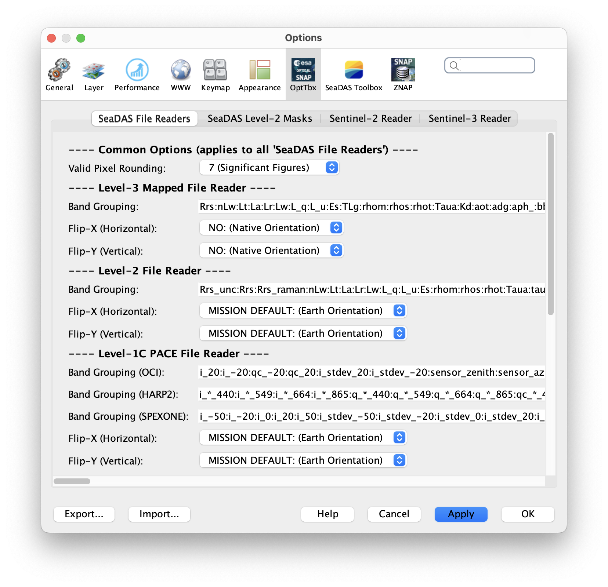

| SeaDAS Readers (Preferences) | |
Preference configuration settings for the SeaDAS File Readers. The term "SeaDAS File Readers" refers to the built-in aspect of SeaDAS which "reads" (aka "loads") the NASA science files intothe SeaDAS application. These readers take advantage of the specific and known data/metadata structure of the NASA science files in order to best utilize and access all the data for use with the SeaDAS application tools. Note: when referring to "SeaDAS File Readers", keep in mind that these file readers are specific and limited to the NASA SeaDAS-OCSSW processed data. There are many other separate file readers contained within the SeaDAS application which support other datasets such as those distributed by ESA, as well as which support generic data.

Image 1: User Interface for the SeaDAS Readers Preferences
Band Grouping Preferences are accessed in the SeaDAS visual application in the Menu at:
Preference configuration settings for the band property "Band Grouping", which is a feature of SeaDAS to group particular bands together into a single folder, unit, group, etc. for the usage of certain tools.
The raster grid orientation of native unprojected satellite data (such as occurs with in level-1 and level-2 data of many missions),
is not always such that pixels toward the top of the screen are geographically north of pixels toward the bottom of
the screen or that pixels toward the left of the screen are geographically west of those pixels toward the right of the screen.
When files are loaded into SeaDAS, metadata (such as the file type, mission, data-level, and whether the satellite is on an ascending
or descending part of the orbit) is utilized by SeaDAS to automatically flip the grid vertically and/or horizontally (if needed)
such that geographic north-south (y-axis) and geographic west-east (x-axis) aligns with the raster grid as it is displayed on the screen.
This is usually the desired behavior for most users in most cases. However, there can be reasons for wanting to view the native
sensor grid orientation. This can be accomplished by configuring your Flip Preferences.
There are essentially 3 options for the image flip states. These options are:
The flip preferences controls are available currently for the following data types: